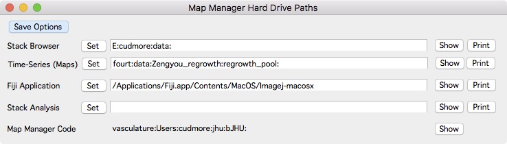

Hard Drive Paths

Open the Hard Drives Path Panel using the main menu ‘MapManager - Hard Drive Paths’.
Save Options Button
Save the options. Saved options will be loaded next time Map Manager is run. Options can also be saved using the main menu ‘MapManager - Save Options…’, or the ‘Save Options’ button in the main options panel.
Stack Browser
Location to load folders in the Stack Browser.
Time-Series (maps)
Location to load and save maps in the time-series panel. This defaults to ‘My Documents’ on Windows and ‘Documents’ on OS X.
Fiji Application
Location of Fiji application. Used when creating line segments.
- On Windows, Select the actual Fiji executable. Something like:
C:\Users\cudmore\apps\Fiji.app\ImageJ-win64.exe
- On OSX, select the folder that Fiji.app is in. Something like /Applications. Once selected, the path will appear something like:
vasculature:Applications:Fiji.app:Contents:MacOS:ImageJ-macosx
Stack Analysis
Not used.
Map Manager Code
Shows the hard-drive path that Map Manager was loaded from. Useful if there are multiple Map Manager installations on one computer.